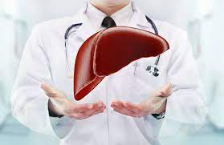

| Beneficios | |
| Los resultados demostraron que el trasplante de hígado mejora marcadamente la calidad de vida de los pacientes en la etapa final de la enfermedad hepática, tanto en el aspecto psicológico como en el físico. |  |
| Propuesta de mejora | |
| Una propuesta de mejora que yo tengo puede ser que la mayoria cuando muera done sus organos por una simple razon y es la que la persona puede morir a falta de donantes entonces ese es un punto a mejorar. | |